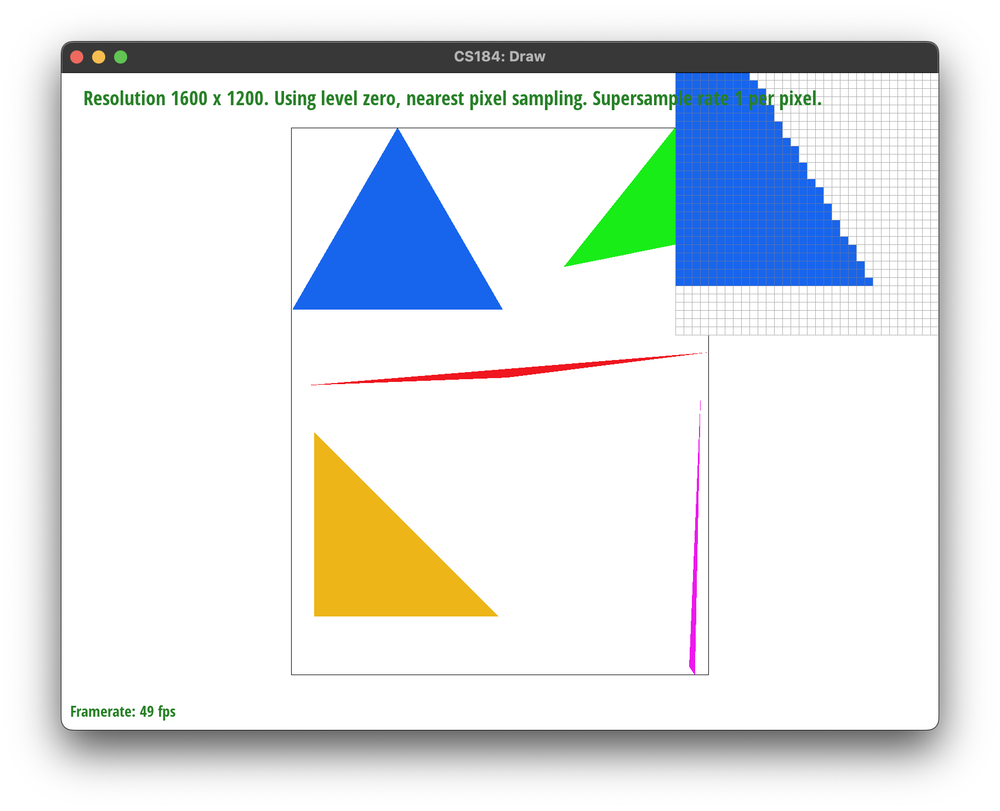

Overview
Give a high-level overview of what you implemented in this homework Think about what you've built as a whole. Share your thoughts on what interesting things you've learned from completing the homework.
Section I: Rasterization
Part 1: Rasterizing single-color triangles
In this section, I wrote a rasterization algorithm which incorporates 3 separate line tests to check for whether a point lies within the given triangle. I made use of the `Triangulation::inside` function to do this, then used `fill_pixel` to color the pixel at that specific (x,y) coordinate to color the triangle. At a higher level, I looped through every pixel which lies within the triangle, bounding the min and max coordinates of the triangles vertices to ensure the algorithm does not iterate through the entire frame buffer for each call to `rasterize_triangle`.
Part 2: Antialiasing triangles
For task 2, I made use of the suggested data structures (i.e. sample_buffer) and modified some functions in the rest of the rasterization pipeline to implement antialiasing via supersampling. Firstly, I increased the size of the sample_buffer array by a factor of the sample_rate. Then, through the same algorithm from `rasterize_triangle`, I place each of the supersampled pixels into the sample buffer. Finally, inside rasterize_triangle, I averaged the color value of each picture according to the super-sampled pixels from the sample_buffer; this is exactly as shown in lecture.
Supersampling is useful because it reduces "jaggies", or the sharp edges that makes pictures look rough or less sharp from a distance. This is shown in the images below (in order, super-sampled by factors of: 1, 4 ,16). The image super-sampled by a factor of 16 looks much sharper than the first image.

Part 3: Transforms
Section II: Sampling
Part 4: Barycentric coordinates
Part 5: "Pixel sampling" for texture mapping
Part 6: "Level sampling" with mipmaps for texture mapping
Section III: Art Competition
If you are not participating in the optional art competition, don't worry about this section!
Part 7: Draw something interesting!

|

|

|

|